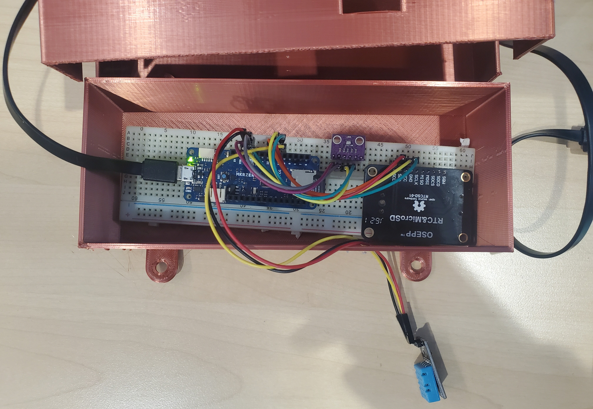

<- HOME
Projects
This page contains information about some of the projects I have done. This page in not comprehensive at the moment, but includes information about what I think are my top 2 most interesting projects. This page will likely change frequently, as I update information on current projects to reflect progress or add projects I forgot about.
Edmonton LRT Model
To keep my skills in AnyLogic that I gained from woring at Mott MacDonald, I am working on creating models of railwail and LRT networks. I figured I would start with the Edmonton LRT, as LRT and subway networks are general closed systems (less to include in model), and the Edmonton LRT specifically has lots of information about it available online.
Plan of action:
- Research
- General background information
- Existing and future routes and stations
- Schedualing or headway, and dwell at stations
- Startup/shutdown operations, if publically available
- Vehicle specifications
- Rail alignment specifications
- Draw network in Civil 3D
- Create map of network in AnyLogic
- Create car/train objects
- set up basic motion along routes
- Adjust motion to match schedules
- Add start screen/asthetic elements
- Optional (if my laptop can handle it): add passengers & rail crossing warnings
Weather Station
I have been working on this project since 2023, presenting it at my school's STEAM fair in 2024 and in 2025.
Original Plan of Action
- Research components/sensors -> get components ✓
- Assemble microcontroller and components ✓
- Write code to be able to read values of humidity, temperature and pressure from sensors ✓
- Set up real time clock (to allow for accurate timestamps) ✓
- Program device to read from all sensors and record the values (and timestamp) to a file in CSV format (and repeat at a set interval).
- Build casing for device, to protect from the elements (semi complete)
- Set device up outside to record data (semi complete, only achieved for 1 week intervals)
- Set up prorgram in R to help anaylyse data ✓
- Set up website for project ~✓
Added Plans
- Switch to microcontroller with wifi connection (semi complete)
- Add live data to website (semi complete, no longer active)
- Add additional features to device
Goals
From the beginning the goal has been to collect data for analysis. In Earth Science 11 I learned about meteorology, which involves looking at data and making connections to weather phenomena. I thought this was interesting, but it could be more interesting and relevant if we learned it using weather data local to our school, as we could feel and see the weather changes ourselves. This inspired me to create a basic weather station for the school, so that I could collect data that future science classes could use when studying weather.
The secondary goal of this project was to collect long-term data. Long-term data would be better for observing weather trends and patterns, which could be used in the future to make predictions, but also that I could just use to practice analyzing data. To complete this goal, I would need to complete the first and to have the device save data, and to keep the device running for long continuous periods.
Version 1
The first version of the project used an Arduino MKRzero board. To the board, I connected a DHT11 (sensor for air temperature and humidity) and BMP280 (sensor for air pressure and temperature), as well as a Real Time Clock. I programmed the device to collect air temperature and humidity from the DHT11 and air pressure from the BMP280. I choose the MKRzero specifically because it has a SD card slot, so I was able to program the device to save the collected data in a text file on the SD card as well as outputting data to the console. To make future data analysis easier, I formatted the output such that it could be read as a CSV. At first, I got the Real Time Clock working, but when trying to use it with the rest of the project I could not get it to keep time properly (always reset to 0). Because of my problems with the RTC, the device would only have the correct time if I manually updated the time in the code, and I would not be able to unplug the device (time would reset when power was lost), so I could not reliably keep time. This motivated me to work on version 2.

Version 2 (failed)
Due to my issues with time keeping in version 1, and the limitations of saving collected data to an SD card, I thought it would be great to make a new version of the device, but using a microcontroller that could connect to the internet. By connecting to the internet, I would easily be able to keep time, and I could even send collected data to a server instead of just saving them to a file. For these reasons I decided to use a Particle Photon board for this version, as it connect to wifi.
Initial progress with this version went well. After setting up an account with Adafruit IO, I was able to program the Photon to send data to my Adafruit IO feeds. I was also able to set it up with the DHT11 (temperature and humidity sensor), but I was never able to get it to work with the BMP280 (temperature and pressure sensor). After trying with the BMP280 for a while, I went back and tried get at least the DHT11 set up and send the data from it to Adafruit IO, but this time the DHT11 also would not work.
After lots of trial and error, and having neither sensor work, I decided that Version 2 was not going to be viable. While the issues of V1 were solved with V2, V2 created new, and far more impactful, problems.
There are no photos of Version 2.
Version 3
After spending too much time not getting version 2 to work, I went back to using the Arduino and recording data to an SD card. I essentially rebuilt version 1, but when I was doing some research on the board I realized that it had a clock built in. Knowing this, I did not add a Real Time Clock component, as I had with version 1. I also found that the board had a 5V battery connector. By connecting a 5V battery, I could keep the device powered in the time between unplugging it from my computer and into my power supply, meaning it would continue to keep time until the power supply ran out. With version 1, I had already built a case and set it up outside (attached to my high school's greenhouse), and now that my time keeping problems were fixed I could finally give it some proper testing.
I tested in inside for a day, then charged up the power supply and set it outside. After about a week I retrieved the device, and found that it had recorded around 4 day's of data (with a measurement once per minute) before the battery died, from which I used to make some nice graphs to compare the data collected and the weather experienced over the period. This was very helpful in when I was presenting my project, but it also gave me some insight into some problems with my setup. The humidity and pressure roughly matched the recorded of actual weather stations, and temperature followed the expected trends, but the tempurature measured was consistantly hotter by 5-10 degrees (Celsius). I have not yet determined the exact cause of this problem, but I believe it to be a combination of the location being partially in the sun, the school building increasing the heat of the location, and poor calibration of the sensors. If/when I iterate on this version of the project, I will look further into this issue and into calibrating of my sensors, as well as adding new sensors (ex. air quality). I will also work on improving the case, as while it has held strong so far, I am not sure how well it protects the device from temperature and if it would withstand more extreme weather.
Version 4
After some success with version 3, I decided again to try building a device that could upload data to the internet. However, instead of using (or failing to use) a micro controller like in version 2, I choose to use a Raspberry Pi. This move was also made as I found that my dad already had multiple, including one that was the size of a micro controller. This was a bigger change than any previous version, as I had to figure out how to use this new device and how to connect my sensors, then rewrite all of my code in Python. After that, I added functionally to upload the data collected to Adafuit IO, so that I could view and access my data without connecting to the Pi.
I then started to work on a website for my project, as that was something I had wanted for a while. I first tried to host the website on the Pi, but with little success. I spent some time looking for free websites that offer website hosting, until finding GitHub sites. This seemed perfect for my project, as I could create a website AND store my code in a repository. After spending not that much time setting up the website, I spent far too much time getting live data to display. This was eventually achieved, and the the website would display the latest data point for humidity, temperature and air pressure. You can still see the website here, although the device is not currently opperational, so the data is always the same.
This version made some significant steps forwards, but it was not without problems. My main two problems were the power supply and the internet connection. Versions 1-3 could easily be powered with a portable phone charger, but I could not use the Pi without plugging it in to an outlet. I am sure there are ways around this, but I could not find a solution while I was actively working on this version. My second, and probably more frustrating problem, was that I could not connect the device to my school's wifi. The ability to connect to wifi was of great importance for this version, as without it it could not properly record data. My school's wifi required the device to open a webpage to login, which I could not do on the Pi. After days of trying to connect my device to the wifi, and with no success, I ended up buying a SIM card with a decent amount of data and just connecting the Pi to my phone's hotspot. Using the hotspot and plugging the device in to an extention cord just outside, I was able to run my device for the duration of my school's STEAM Fair, at which I was presenting at. However, this was certainly not a permenant solution, as I could not keep it plugged after the fair and I am unable to move my phone if it it being used as a hotspot. Moving forward with this version these are the main issues I need to firgure out before I can make improvements to the functionality of the device.